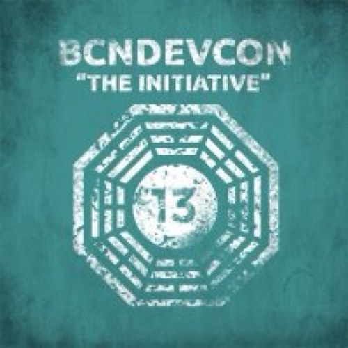

Primer día en la BcnDevCon'13
Ayer, día 8 de noviembre, ha tenido su inicio el BcnDevCon13. Ésta es la tercera edición de este evento que reúne a 1000 entusiastas de la tecnología, desarrolladores y muchos otros perfiles similares. En esta ocasión se centra en cloud, móvil, robótica y open source.
En este artículo se explican algunas de las charlas que ha habido en este primer día. Durante el fin de semana habrá más sesiones que podréis leer en posteriores artículos.
Prácticas de despliegue automático
Guillem Hernández, que trabaja como ingeniero de calidad y rendimiento web, explicó cómo funciona el sistema de despliegue automático en Softonic. La charla empezó explicando cómo la aplicación de metodologías ágiles y la integración contínua en el equipo de desarrollo provoca, al generar nuevas versiones y ampliaciones del producto con mayor frecuencia, un cambio en los equipos de QA y operaciones para que se pongan en producción sin mayor retraso. Detalló que testean su código muy frecuentemente utilizando tests unitarios y funcionales, revisiones de código y despliegues a menudo. Tienen cuatro entornos:
- Desarrollo: Sólo tiene una parte de los datos de producción.
- Integración: Es el primero que tiene una base de datos copiada de producción.
- Staging: Es un entorno que emula, aproximadamente, producción y el segundo más estable.
- Producción
Descubrieron que era necesario tener una revisión candidata y validar los cambios que incluía. Esta revisión es un número de revisión de Subversion, que pasa los tests unitarios. Entonces programan un despliegue. Actualizan staging y ejecutan algunos tests más:
- Tests de estrés, utilizando Apache jMeter.
- Tests de funcionalidad, utilizando Selenium WebDriver, en los que también comprueban que los elementos de publicidad son los correctos.
Una vez los tests de estrés y funcionalidad se han completado satisfactoriamente en staging, se envía un mensaje a una lista para confirmar el despliegue. Cuando sus equipos de sistemas, desarrollo y QA aprueban el despliegue, una herramienta automática despliega el nuevo código y ejecuta algunos tests funcionales automatizados. Cuando ha finalizado, envía un mensaje de correo con un resumen del estado.
Concurrencia en Python
Aitor Guevara, CTO y fundador de Ducksboard, dió una gran charla sobre concurrencia en Python. La concurrencia consiste en gestionar varias tareas al mismo tiempo, aunque no necesariamente significa completarlas. La diferencia con el paralelismo es que no se hacen tareas idénticas de forma simultánea. El paralelismo exige tantas CPU como procesos se quiera tener simultáneamente. La E/S es síncrona, lo que la hace lenta. Por ejemplo, un código que dependa del acceso a la red de forma síncrona, puede tardar más tiempo para completar una cadena de tareas. Para hacerlo posible, conviene conseguir E/S asíncrona.
Una de las soluciones habituales es utilizar threads. En Python, sólo se pueden utilizar threads de sistema operativo, pero no se conseguirá paralelismo real debido al bloqueo GIL que el propio intérprete implementa. La alternativa es tener un sistema multiproceso, lo que es complejo debido a que, otra vez por el GIL, requiere organizarlos de forma conveniente, que no es muy evidente. Esta solución presenta una variante si se utilizan colas, como las que implementa la librería Queue de Python. En Python la API de los threads es familiar, pues se hizo como la existente en Java y es sencilla, pero tienen un rendimiento y consumo de recursos bastante deficientes, además de complicar sincronizaciones algo más elaboradas.
Otra opción es usar Twisted, que es una infraestructura que se basa en un bucle de eventos y llamadas de vuelta, o callbacks. A diferencia con otros entornos que utilizan bucles de eventos, el de Twisted es explícito. Tiene una técnica para gestionar los eventos retardado de forma encadenada. Esto permite que cuando una función devuelve un evento retardado, se genere una serie de llamadas, en orden. Además, Twisted incluye muchas herramientas para gestionar el producto como un servicio, o librerías para utilizar diferentes protocolos. No es muy querido en la comunidad Python por que no sigue todas las directrices.
Una alternativa más nueva es Gevent, que utiliza corutinas. Las corutinas son una contraparte a otro concepto de Python que es el de generador. Por ponerle una definición, es una función que se mantiene en ejecución alimentándose de entradas que se le da con un generador. Convertirlas en algo muy parecido a los threads reales utilizando una librería llamada greenlets. Aplicar esto a operaciones en otras librerías es posible utilizando monkey-patching, técnica no muy aceptada en la comunidad Python. También se puede utilizar libev para tener un bucle de eventos. Sus ventajas son que presenta una API muy eficiente y tiene buen rendimiento. Las desventajas, es que el monkey-patching no está bien visto y que puede romper la compatibilidad.
El último en llegar al barrio, en Python 3.4, es async IO que es un modulo incluído en la librería estándar. Se caracteriza por permitir elegir entre un modelo similar a Twisted, con bucle de eventos y callbacks, o al de Gevent, con corutinas. Hay, también una infraestructura llamada coexistence, pero todavía no está completada.
JavaScript y por qué no comparar la velocidad con el tocino
Isabel Cabezas y Toni Recio, de pasiona, presentaron una charla sobre rendimiento de JavaScript, presentando un juego sobre el que probar el rendimiento, llegando a cinco puntos clave. Al juego, incluía un contador de FPS, un código que interactuaba con el juego, simulando los movimientos del jugador, y el tiempo de cada jugada. Explicaron que las aplicaciones lentas se pueden detectar cuando el contador de FPS baja de los 60, o cuando aparecen glitchs, que son caídas en picado de los FPS, produciendo deformaciones en la imagen. En la lista de elementos que pueden hacer que la aplicación sea lenta, se encuentran:
- La red
- HTML
- CSS
- Colecciones
- JavaScript
- Localización
- DOM
- Formateo
- Constructor de bloques
- Diseño
- Visualización
- Código propio de la aplicación
Una de las herramientas que comentaron para analizar el rendimiento, es lo que se conoce como profilers, que se incluyen en los navegadores para ver los tiempos de respuesta de la interfaz de usuario.
También explicaron que el Garbage Collector, uno de los procesos que más afecta al rendimiento de los procesos de UI, se llama en ciertas ocasiones:
- Cuando el pool se agota.
- En cada llamada a new, especialmente graves cuando se agota el pool.
- Cada ciertas peticiones de memoria, cuando se está quedando sin memoria.
Su conjunto de principios es el siguiente:
- Controlar el consumo de memoria en el uso de objetos. Uno de los ejemplos de mejora de rendimiento se basó en cambiar un efecto de rotación por sustitución de un objeto en una u otra orientación por un efecto de rotación girando la imagen del objeto, lo que consique mejorar el rendimiento un 70%.
- Eficiencia en la gestión de objetos. Por ejemplo, evitando crear getters y setters innecesarios.
- Rapidez matemática. Basándose en que, en JS, todos los números son flotantes, lo que le da mucha flexibilidad, pero poca eficiencia. Por ejemplo, utilizando enteros, el valor se puede almacenar directamente en la pila, provocando sólo una operación de lectura. Se pueden especificar enteros, declarándolos como enteros, haciendo las divisiones con el modificador |0, o especializando los cálculos.
- Dominar los arrays. Conviene utilizar arrays pre-reservados, es decir, especificando el tamaño siempre que sea posible. Los recorridos de vectores suelen utilizar variables intermedias, que se pueden evitar cambiando la técnica de recorrido; las comparaciones con la longitud del vector pueden ser evitadas poniéndola en una variable de cache, o recorriéndolo hacia atrás; las combinaciones de tipos en un vector generarán más copias de vectores, que se pueden evitar con vectores tipados explícitamente; evitar borrados de referencias en un vector por un valor inocuo es una forma de mejorarlo.
- Obtener objetos del DOM. En lugar de utilizar un getElement en un bucle, es mejor cachearlo, si es posible. Las comparaciones de valores del DOM se hacen contra tipos de cadena, por lo que conviene convertir al tipo necesario para la comparación.
Con estas técnicas, y algunas más, el tiempo mejora hasta un 10% del original en los tres navegadores que utilizaron (IE, Chrome y Firefox). En Techdencias publicarán más información interesante.
Estrategias de JavaScript para entornos híbridos web y móvil
Núria Ruiz planteó la necesidad de utilizar en su trabajo, en Tuenti, una aplicación híbrida que fucione tanto para la web como para el móbil. Una aplicación híbrida es una aplicación nativa en la que parte de las funcionalidades se basan en web. De hecho, consiste en una aplicación que muestra vistas web deforma remota, ajustando su aspecto y comportamiento. Estas vistas pueden combinar JavaScript remoto y local. Esto trae ciertas ventajas:
- El código JavaScript, o la parte local, al menos, se pueden empaquetar con la aplicación.
- Es muy sencillo conseguir que el código interactúe a través de la aplicación para acceder a los recursos del terminal.
- Las sesiones ya no están restringidas a 301s de duración. Eso se puede gestionar con la aplicación nativa.
- La funcionalidad de la aplicación puede mantenerse cuando el dispositivo está sin conectividad, utilizando una memoria intermedia local.
La web es buena en su portabilidad, su disposición y formateado del texto y en la entrega, pero tiene mal rendimiento en el entorno móvil. En iPhone, se ve afectado por la velocidad de la red, pero de forma inversa, cuanto más rápido va, peor rinden los navegadores. Para mejorar esto se pueden utilizar algunas herramientas, como:
La regla básica consisitiría en conocer lo que se denomina user base, que consiste en toda la información sobre las configuraciones, terminales, sistemas, conexiones, navegadores, etcétera, que los usuarios utilizan con mayor frecuencia.
La estrategia final contempla los siguientes puntos:
- Ser plano: Tener una versión básica sin ningún JavaScript.
- Incrementa: Sin ejecutar JS en el renderizaje, mejorará el tiempo de carga. Luego se puede utilizar para decorar.
- Ser sofisticado: Accediendo a funcionalidad nativa a través de WebViews.
También recomendó utilizar PhoneGap.